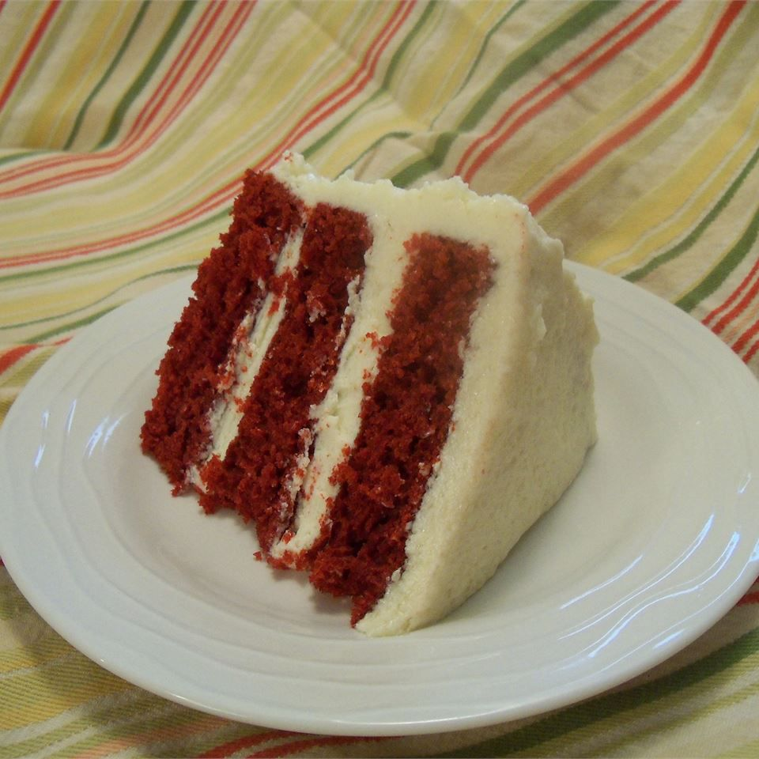

Red Velvet Cake

Ingredients
- 150g Butter
- 300g Caster Sugar
- 1 Teaspoon Vanilla Extract
- 3 Eggs, seperated
- 250g Plain Flour
- 25g Cornflour
- 1 Teaspoon Baking Powder
- 2 Teaspoon Cocoa Powder
- 250ml Buttermilk
- Red food colouring
- Pinch of Salt
- 1 Teaspoon White Wine Vinegar
- 1 Teaspoon Bicarbonate of Soda
For the White Frosting:
- 2 Large Egg Whites
- 250g Caster Sugar
- 50g Goldent Syrup
- Pinch of Salt
- 1/4 Teaspoon Cream of Tartar
- 2 Tablespoon Water
- 1 Teaspoon Vanilla Extract
- Two 23cm diameter sandwich tines, each about 5cm deep
Method
- Preheat the oven to 180°C. Butter and flour the sides of the cake tins and line the bases with parchment paper.
- Cream the butter in a large bowl or in an electric fool mixer and fluffy. Add the vanilla extract and the egg yolks, one by one, beating well after each addition.
- Place the flour, cornflour, baking powder and cocoa powder in a sieve resting on a plate. Measure the buttermilk with the food colouring and mix together. It should be red, so add more if you need to.
- Sift one-third of the dry ingredients into the butter and eggs mixture until just combined, then pour in one-third of the buttermilk mixture and mix until just combined. Continue, combining a third at a time, until both are incorporated.
- Whisk the egg whites and salt in a large, spotlessly clean bowl until stiffish peaks form. Add one-quarter to the batter and mix. Add the remaining egg whites in three stages, folding them gently with a small metal spoon until just incorporated, leaving as much air in the egg whites as possible.
- In a small bowl, mix the vineger and bicarbonate of soda until it bubbles up, then gently fold this into the batter. Quckly pour the batter into the two prepared tins and smooth the tops. Baked in the oven for 25-30 minutes or until a skewer inserted into the middle comes out clean.